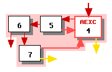
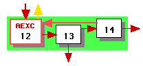
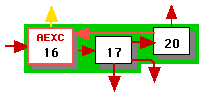
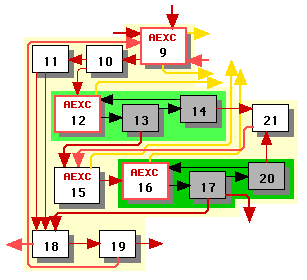
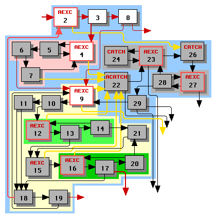
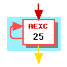

Electrical FireDesignPrimitive Graph FormatControl LayerControl SchedulingExample |
|
Let us continue scheduling the example graph. We schedule loops in depth-first order of the loop hierarchy tree.
The first loop we schedule is loop 4. In phase 3b we identify the initial long edges, which in this case happen to be the edges incoming to node 4 and the exception edges leaving nodes 4 and 7. The result is illustrated in Figure 1, in which long edges are thick and short edges thin.
|  |
| Figure 1 |
|---|
We next schedule loops 12 and 16 to obtain the schedules illustrated in Figure 2. Note that node 17 is a switch node (it has three outgoing edges), so all of its outgoing edges are long.
| Loop | Linear schedule (phase 3d) | Loop schedule (phase 3e) |
|---|---|---|
|  | [[12, 13, 14]] | [[12, 13, 14]] |
|  | [[16, 17, 20]] | [[16, 17, 20]] |
| Figure 2 | ||
Having scheduled loops 12 and 16, we can now schedule loop 9. At this point we calculate long and short edges anew, without regard to what they were when scheduling loops 12 and 16. As stated in phase 3a, when scheduling loop 9 our set R does not include the non-header nodes of its immediate subloops.
Figure 3 illustrates loop 9 with nodes outside the set R greyed out. The edges entirely within the subloops are black to indicate that we no longer need to consider them. Note that edge 13->15 is long because it originates from a node that is not the end node in any clique of subloop 12's schedule.
|  |
| Figure 3 |
|---|
We schedule starting from the header, node 9. We repeatedly apply alternative 1 of the linear scheduling algorithm of phase 3d, producing one clique [9, 10, 11, 18, 19]. At this point we can apply alternative 3 to either node 12 or node 15 -- neither has any incoming short edges. We arbitrarily apply it to node 12, producing a second clique [12, 13, 14] and then to node 15, producing the third clique [15, 16, 17, 20, 21]. This takes care of all the nodes, and our linear schedule is:
[[9, 10, 11, 18, 19], [12, 13, 14], [15, 16, 17, 20, 21]].
We apply the loop scheduler from phase 3e. There is no clique Ck that satisfies the conditions, so we keep the linear schedule.
Having scheduled loop 9, we can now schedule loop 2. Figure 4 illustrates loop 2 with nodes outside the set R greyed out; these nodes are outside R either because they are internal nodes of subloops 4 or 9 or because they are outside the main body of the function. The edges entirely within the subloops and the edges originating from nodes outside the main body of the function are black to indicate that do not need to consider them at this stage. Note the following:
|  |
| Figure 4 |
|---|
We schedule starting from the header, node 2. We repeatedly apply alternative 1 of the linear scheduling algorithm of phase 3d, producing the first clique [2, 3, 8]. At this point we must apply alternative 3 to emit loop 4's schedule, producing the second clique [7, 4, 5, 6]. Now we can apply alternative 1 to add node 9 to the end of the second clique, which automatically pulls in the rest of loop 9's first clique: [7, 4, 5, 6, 9, 10, 11, 18, 19] and pushes loop 9's other cliques onto the stack T. At this point we apply alternative 2 to pop these cliques from the stack T, yielding the following linear schedule:
[[2, 3, 8], [7, 4, 5, 6, 9, 10, 11, 18, 19], [12, 13, 14], [15, 16, 17, 20, 21]]
We apply the loop scheduler from phase 3e. There is no clique Ck that satisfies the conditions, so we keep the linear schedule.
The last loop in the main body of our function is loop 25, as illustrated in Figure 5. This loop is very simple, has no short edges, and yields the trivial schedule [[25]].
|  |
| Figure 5 |
|---|